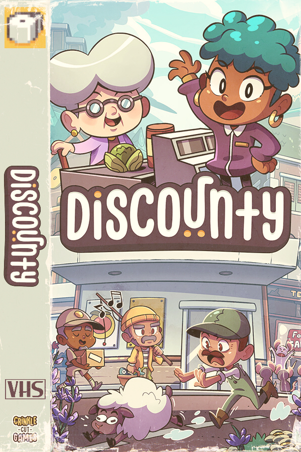

Discounty
Every archived year-end list appearance, including placement and points earned.
About the Game
Manage your own discount supermarket! Get caught up in small-town drama, organise and plan your shop's layout, and strike lucrative trade deals as you expand your secretive aunt's business empire. Selling more frozen fries will surely heal this broken community...right? Step into the quirky harbour town of Blomkest, where your aunt has entrusted you with managing its only supermarket. Design and organise your shop, manage stock levels, work the checkout, and strike trade deals. Build relationships with the charming locals, and grow your business empire while navigating community dynamics. Use every tool at your disposal to expand your business, but be mindful: rapid growth might ruffle a few feathers in this tight-knit community. Will you pursue endless profits, or find a way to benefit everyone in Blomkest?Your aunt has invited you to manage the local store, 'Discounty', in the run-down harbour town of Blomkest. But beware, not everyone wants you to succeed. Explore Blomkest after business hours and get to know the townsfolk. Turn them into loyal patrons of Discounty and uncover the town's hidden secrets.Create an eye-catching, efficient store by rearranging shelves and products. Design inviting aisles for easy navigation and add decorations to encourage purchases!Blomkestians don't take well to newcomers. Gain manufacturers' trust, make trade deals, and sell local specialty goods to boost Discounty profits! Keep shelves stocked, floors clean, and the storage room organised. Ring up customers shopping promptly to keep them happy! No one likes waiting around...As profits soar, reinvest and grow! Expand your shop to stock more goods and advertise it around town!Choose your appearance, handpick your outfit, and pick a name that reflects your unique style. Your ever-wise Aunt will always recognise you, no matter your chosen guise.
| Developer | Crinkle Cut Games |
|---|---|
| Publisher | PQube |
| Genres | RPG, Simulation, Casual |
| Platforms | PC |
SingleplayerSteam AchievementsFull controller supportSteam CloudRPGStory Rich2DPixel GraphicsCharacter CustomizationCuteBuildingTop-Down
Game information provided by RAWG.
Points by Year
List History
| Year | Source | List | Placement | Points |
|---|---|---|---|---|
| 2025 | NPR | The best games of 2025, picked by NPR's staff | Unranked | 1 |